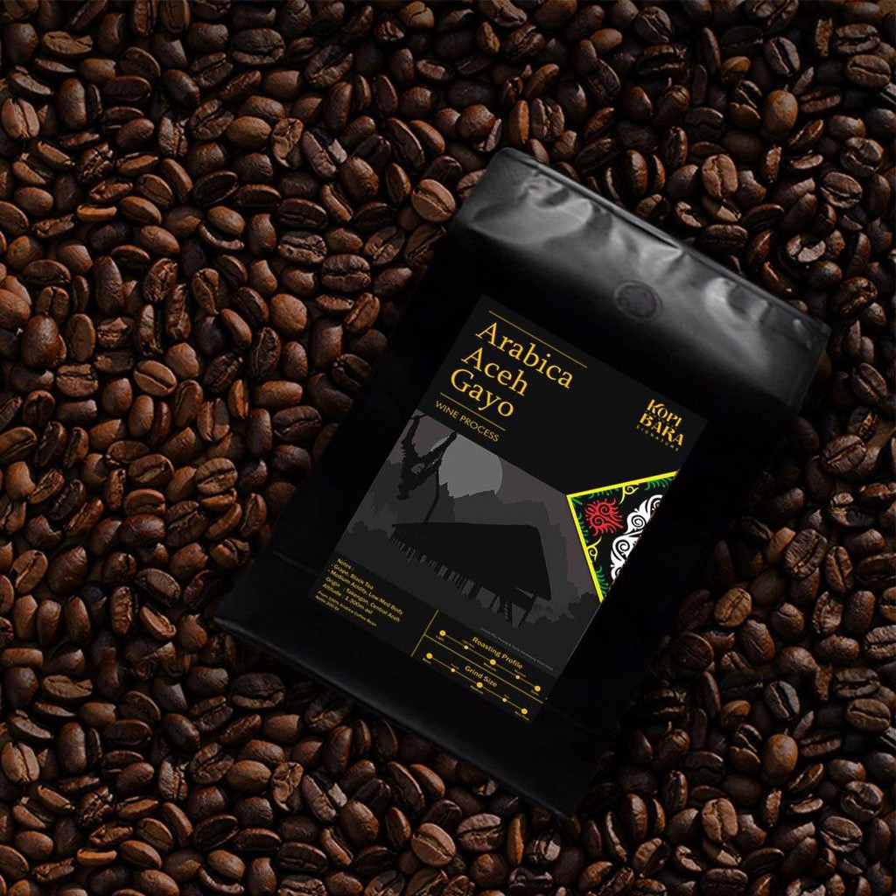
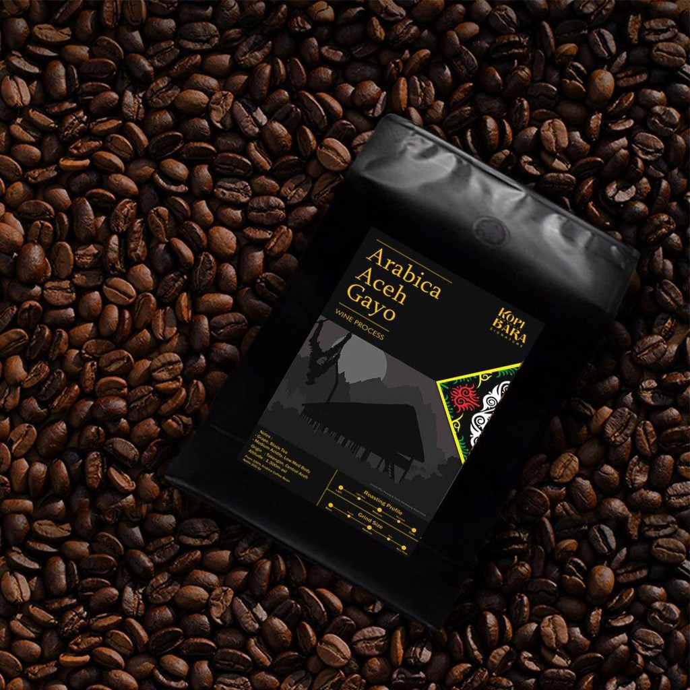

CATALOG COFFE


Kopi kintamani
Rp. 105.000 /Kg
Kopi Kintamani ditanam di ketinggian 900-1000 mdpl di dekat Gunung Batur kopi ini ialah khas bali, cita rasa serta aroma dari Kopi Kintamani ini cenderung terasa citrusy. Salah satu penyebabnya adalah proses penanamannya yang unik dan tidak biasa. Perkebunan Kopi Kintamani ini biasanya juga menjadi lahan perkebunan jeruk atau sayuran lainnya.
Pancake Kopi
Rp. 40.000 /Porsi
pancake kopi? kenapa tidak kami disini mencoba ber eksperimen dnegan membuat pancake biasa dicampurkan kopi favorit kami dan ya cita rasa serta aroma dari kopi menjadi ciri khas dari kue pancake ini dan rasanya pun campuran antara manis pait dan asem jadi penarasan kan ayo cobain!!!
Kopi Kintamani
Rp. 105.000
Kopi Kintamani ditanam di ketinggian 900-1000 mdpl di dekat Gunung Batur kopi ini ialah khas bali, cita rasa serta aroma dari Kopi Kintamani ini cenderung terasa citrusy. Salah satu penyebabnya adalah proses penanamannya yang unik dan tidak biasa. Perkebunan Kopi Kintamani ini biasanya juga menjadi lahan perkebunan jeruk atau sayuran lainnya."
Kopi Gayo
Rp. 100.000
Kopi Gayo memiliki karakter rasa yang kuat dengan tingkat keasaman yang rendah. Kopi Gayo juga memiliki sedikit aroma rempah namun tidak melekat di lidah. Inilah yang membuat kopi asal Aceh ini begitu digemari tak hanya di Indonesia, tetapi juga Eropa dan Amerika Serikat. Meski begitu, ciri khas rasa Kopi Gayo ini cenderung tidak konsisten dikarenakan perkebunan kopi di tanah Gayo memiliki ketinggian yang berbeda dan budidaya yang beragam. Maka dari itu, karakteristik rasa yang dihasilkan bisa berbeda juga tergantung dimana serta pada ketinggian berapa biji Kopi Gayo ditanam.
Kopi Toraja
Rp. 100.000
Karakter kopi toraja yang sangat kaya rasa membuatnya nikmat meski diseduh dengan metode apapun. Jika Anda ingin rasa yang pekat, sajikan dengan cara tubruk atau espresso. Sementara jika Anda suka rasa yang agak ringan, seduh dengan cara pour over. Ada dua jenis kopi yang ditanam di Toraja, yaitu arabika dan robusta. Jenis arabika kebanyakan dijual sebagai green bean, sedangkan robusta diolah sebagai bahan kopi instan dan oleh-oleh khas. Rasa kopi Toraja yang nikmat membuatnya digunakan sebagai campuran house blend agar body-nya syrupy dan bold. Jika Anda mencari house blend dengan body bold, Sasame Coffee memiliki banyak pilihan untuk Anda. Kunjungi juga Kopipedia untuk mendapatkan beragam info lainnya tentang dunia perkopian.
Kopi Pasak Bumi Kalimantan
Rp. 100.000
kopi pasak bumi ialah kopi khas dari Kalimantan kopi ini juga termasuk tumbuhan afrodisiak yakni tumbuhan yang meningkatkan gairah seksual. Dengan kandungan senyawa alkaloid, saponin, dan tanin di dalamnya, kopi pasak bumi juga disebut bisa melancarkan peredaran darah. Kopi ini biasanya dipadukan dengan berbagai varian rasa seperti jahe dan temulawak. Dengan kombinasi rasa ini, kopi pasak bumi semakin diminati kaum adam.
Coffe shop kami menjual produk-produk Berbagai variant coffe dari yang Pahit hingga manis
Keuntungan belanja di Coffeshop kami :
1. Berbagai macam variant coffe ditawarkan
2. Kami memberikan garansi jika coffe yang kami jual Expired atau kadaluarsa
3. Fast Respon dan ramah dalam melayani pelanggan